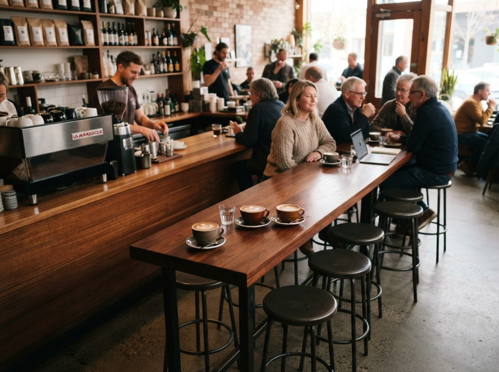

打破「咖啡只有苦味」的印象！海洋咖啡精選世界各產區豐富多樣的咖啡豆，無論是花果香清亮、堅果可可溫潤，抑或醇厚深沉，我們陪伴你在杯中探索浩瀚風味，找到專屬於你的那一份心動。

我們相信咖啡的風味就像海洋一樣深廣遼闊。不論你過去是否怕苦、怕酸，在這裡，我們用豐富的咖啡豆為你打開新世界。
多數人排斥咖啡是因為接觸了過度烘焙的劣質商業豆。海洋咖啡帶你認識淺焙如水果茶般的清新甘甜，以及中焙堅果太妃糖的溫潤芬芳。
從非洲衣索比亞的花果香、中美洲哥斯大黎加的蜜甜，到亞洲印尼曼特寧的草本厚實，我們搜羅全球各種品種與處理法，呈現在你杯中。
我們不講高深難懂的專業術語，而是透過直觀的「風味指南」與「互動尋豆測驗」，陪伴每一位咖啡新手，輕鬆喝出屬於自己的幸福感。
點選下方分類篩選，尋找今天最想感受的產區風味。
如海風拂來的清爽白花香氣，入口帶有熟成黃檸檬與蜂蜜甜感，尾韻是明亮的花果茶芬芳，新手初嚐黑咖啡的最佳首選。
以專利雙重厭氧熱衝擊處理，釋放出不可思議的草莓、水蜜桃果醬與玫瑰花茶香，喝一口就驚呼「這真的是咖啡嗎？」的奇幻之作！
經典優雅的代表！火山灰土壤孕育出的溫潤風味，入口充滿烤杏仁與榛果香，中段帶有絲滑黑巧克力甜感，口感圓潤平和。
澎湃如潮水般的烏梅與黑醋栗果汁感！飽滿有勁的多汁酸甜，搭配洛神花茶尾韻，層次分明，是手沖狂熱者不可錯過的高階豆。
傳統濕剝法造就獨特醇厚身段，帶有雪松木、濃郁黑糖與草本香氣。完全無酸，入喉回甘悠長，加奶做成拿鐵更是濃郁滑順無比。
如同交響樂般華麗的葡萄乾蜜處理，散發出成熟紅酒、黑櫻桃與楓糖香氣。醇厚度高、甜感極佳，是讓人一試就徹底愛上咖啡的魔力豆！
不知道從哪一款豆子開始？回答 2 個直覺問題，我們為你推薦最能打動味蕾的一杯！
這款豆子擁有如同晨曦般的茉莉花香與檸檬甜感，完全顛覆咖啡只有苦澀的既定觀念！極其適合剛踏入精品咖啡世界、喜愛清爽優雅風味的你。
每一種咖啡豆都有它最閃耀的時刻，簡單選對器具，在家就能沖出一杯好咖啡。
水流透過濾紙溫柔萃取，能最大程度呈現咖啡豆清澈、精緻的花果酸甜與層次感。
浸泡式萃取完整保留咖啡油脂，口感最為濃醇滑順，操作零失敗，最適合忙碌的早晨。
高溫蒸氣萃取出油脂豐厚的濃郁液體，加入熱熱的打發鮮奶，在家即可享用媲美店面的拿鐵。
在冰箱低溫冷藏 12 小時，酸澀感大幅降低，發酵甜感與酒香濃郁飽滿，夏日消暑首選！
先感受咖啡粉被熱水浸潤時飄散的香氣，是茉莉花香、熟果味還是焦糖可可？喚醒你的嗅覺記憶。
喝一小口讓咖啡液混合空氣霧化在口腔中，感受舌頭兩側的生津酸甜與舌面的絲滑觸感。
吞下後輕閉雙唇呼氣，喉頭會泛起如烏龍茶般持久悠長的回甘，這就是精品咖啡最迷人之處。
在這裡，每一位客人都在各種咖啡豆中找到了自己的心頭好。
「以前喝便利商店美式都覺得又苦又澀一定要加糖，直到在海洋咖啡喝了耶加雪菲日曬，第一次知道原來咖啡居然可以有這麼甜的花香與蜜柑味！真的徹底愛上了。」
「海洋咖啡的豆單非常豐富，從常態的瓜地馬拉到罕見的雙重厭氧玫瑰茶應有盡有。每包豆子都有詳細的沖煮建議參數，即使在家手沖也能百分之百還原店內風味。」
「用網站上的測驗挑了哥斯大黎加巴哈，做成冰滴咖啡整個辦公室都是葡萄乾和紅酒香，同事喝過全都驚呆了！海洋咖啡把推廣好豆子這件事做得太棒了。」
想親身一次品嚐 6 種不同產區與處理法的咖啡豆嗎？每週六下午，海洋咖啡首席烘豆師將帶領你透過專業杯測匙，細細辨別不同咖啡豆的獨特香氣。